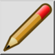
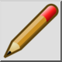
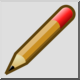
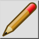

Uredi blok
Toolbar / Icon:
 

Menu: Blok > Uredi blok
Shortcut: B, E
Commands: blockedit | be
Toolbar / Icon:
 

Menu: Blok > Uredi blok
Shortcut: B, E
Commands: blockedit | be
To orodje odpre za urejanje v seznamu blokov izbrani blok. Blok, je lahko nato preurejamo kot glavno risbo. Za vrnitev na risbo odprite za urejanje blok "*Model_Space" ali uporabite orodje "Nazaj na glavno risbo" v meniju "Blok".